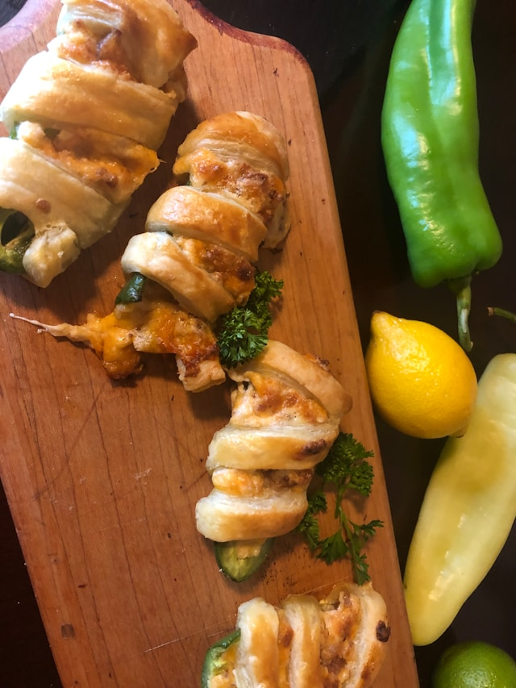

Italian Chicken Sliders

Description
These Italian chicken sliders are pull-apart sliders stuffed with juicy chicken, creamy ricotta cheese, marinated artichokes, spinach, and melty mozzarella, with a pop of sweet peppers in every bite.
Ingredients
- 1 rotisserie chicken, shredded
- 1 tablespoons olive oil (optional)
- 1 cup ricotta cheese
- 1/2 cup chopped marinated artichoke hearts, divided
- 1/2 cup shaved Parmesan cheese, divided
- 1 pinch salt and freshly ground black pepper
- 1 (12 count) package slider buns
- 2 tablespoons garlic aioli, such as Trader Joe’s® Garlic Dip, or more as needed
- 1 cup fresh spinach
- 1/2 cup sweety drop peppers
- 6 slices mozzarella cheese, or more as needed
- 1 tablespoon olive oil or melted butter, as needed, for brushing
- garlic salt to taste
- balsamic glaze (optional)
Steps
- Gather all ingredients. Preheat the oven to 350 degrees F (180 degrees C). Grease or line a 9x13-inch baking dish.
- Toss shredded chicken with 1 tablespoon olive oil if desired; set aside.
- In a small bowl, stir together ricotta cheese, 2 tablespoons chopped artichokes, 2 tablespoons Parmesan cheese, salt, and black pepper until smooth; set aside.
- Slice rolls in half horizontally, keeping the top and bottom halves intact. Spread garlic dip over cut side of bottom half. Add a layer of spinach. Spread ricotta mixture over spinach.
- Evenly scatter shredded chicken on top. Distribute the remaining artichoke hearts and sweety drop peppers. Lay down fresh mozzarella slices and sprinkle with remaining Parmesan cheese.
- Place the top rolls on. Brush tops with olive oil or melted butter. Sprinkle with garlic salt. Cover loosely with foil.
- Bake in the preheated oven until mozzarella melts and sliders are warmed through, 12 to 15 minutes.
- Slice into individual sliders, drizzle with balsamic glaze, and enjoy warm.
Home